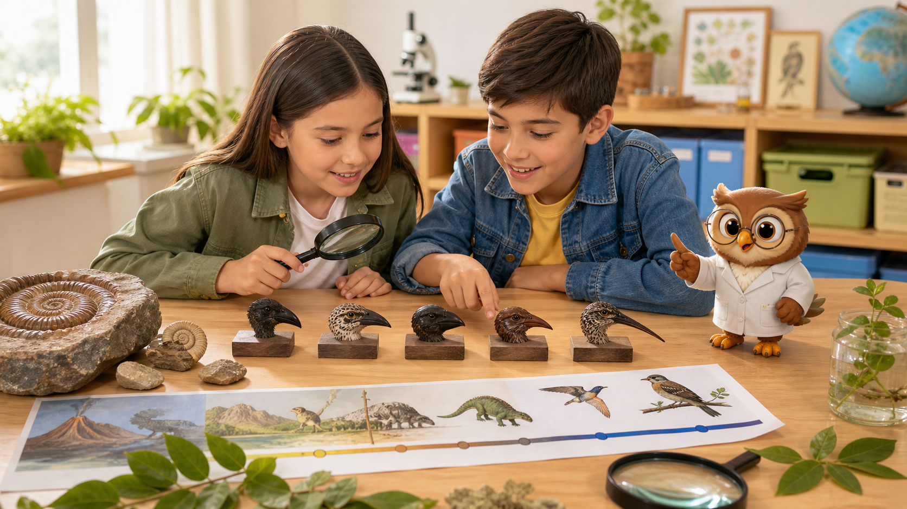
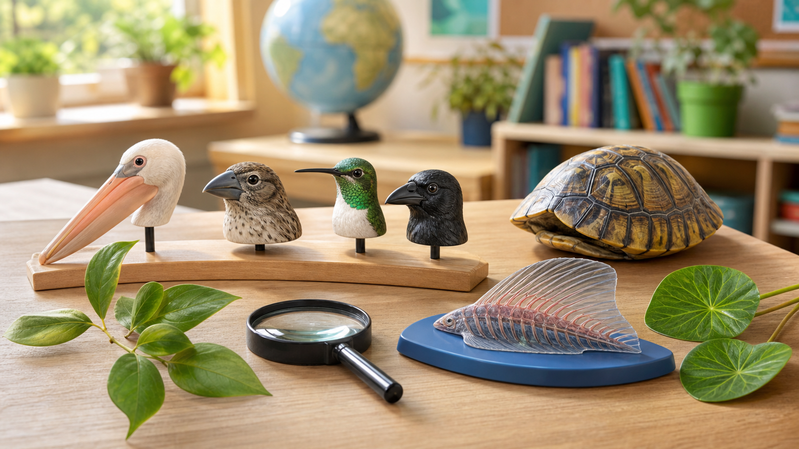
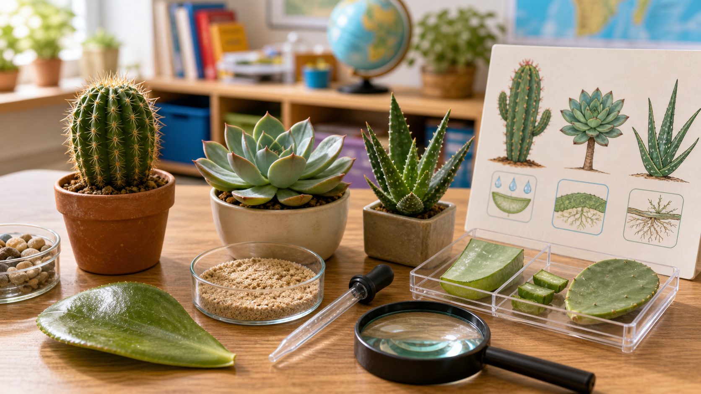
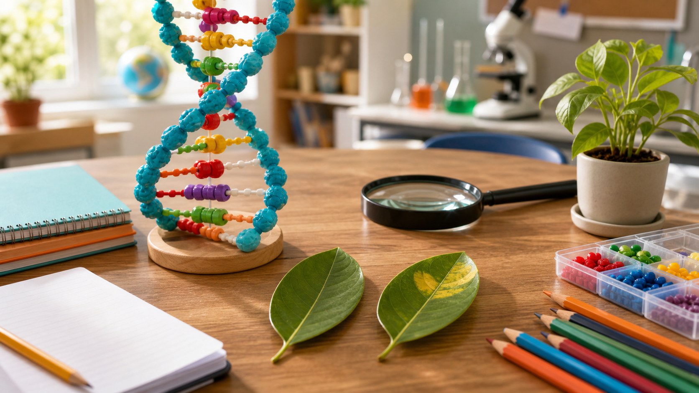
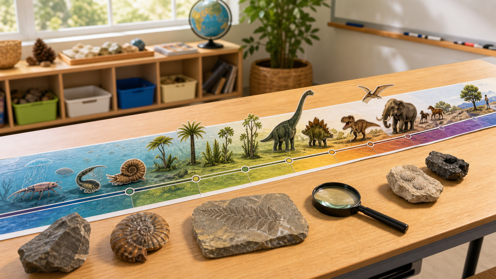

Explorar · observar · comparar
Adaptación, mutación y tiempo geológico
En esta lectura vas a descubrir cómo algunos rasgos ayudan a los seres vivos y cómo la Tierra ha cambiado durante muchísimo tiempo.
Toca una tarjeta para descubrir una idea central.

Observa · compara · explicaMeta de aprendizaje
Al terminar, podrás explicar la diferencia entre adaptación y mutación, y relacionarlas con cambios de los seres vivos a través del tiempo.
Piensa: ¿por qué algunos seres vivos tienen rasgos que parecen ayudarles en su ambiente?

Rasgos para compararAntes de seguir: predice
Elige una experiencia cotidiana. No hay una sola respuesta; piensa qué podría estudiar la ciencia.
Toca una experiencia para activar tus ideas.

Ambiente seco
¿Qué es una adaptación?
Una adaptación es un rasgo que ayuda a un ser vivo a vivir mejor en su ambiente.
Ejemplo: un pico fuerte puede ayudar a romper semillas duras.
Adaptaciones
Tipos de adaptación
Toca cada tarjeta para ver un ejemplo.
Toca una tarjeta.
Observa la imagen:Algunas adaptaciones se ven en la forma del cuerpo; otras se notan por cómo vive o se protege un ser vivo.
¿Qué es una mutación?
Una mutación es un cambio en las instrucciones heredadas de un ser vivo.
No siempre se nota. A veces cambia un rasgo, y su efecto depende del ambiente.
Una mutación no es automáticamente buena o mala.

Cambio heredadoAdaptación o mutación
Elige la mejor clasificación. Puedes volver a intentar.
Selecciona una opción.
Cambio heredado
Rasgo útil
Tiempo geológico
La Tierra tiene una historia larguísima. Para estudiarla, los científicos la organizan en grandes divisiones llamadas eras geológicas.
Estas divisiones ayudan a ordenar cambios del planeta y de los seres vivos.

Tiempo geológicoOrdena la idea
Toca la tarjeta que muestra una secuencia lógica.
Elige una secuencia.
¿Qué evidencia se puede observar?
Para explicar cambios se buscan fósiles, formas del cuerpo, ambientes antiguos y comparaciones entre seres vivos.
Toca una evidencia.
Evidencias del pasado
Reto rápido
Selecciona la palabra que completa mejor la idea.
Un rasgo que ayuda a un ser vivo a vivir mejor en su ambiente puede ser una...
Elige una palabra.
Ejemplo de adaptación
Ambiente y rasgos
Piensa, no escribas
Reflexiona en silencio: ¿qué ejemplo de la vida diaria te ayuda a entender una adaptación?
Importante: esta reflexión es solo para pensar. No debes escribir nada aquí.
Observa la imagen y piensa: si un ser vivo se parece a su ambiente, ¿cómo podría ayudarle ese rasgo?
Conclusión
AdaptaciónRasgo que ayuda en un ambiente.
MutaciónCambio heredado que puede afectar un rasgo.
Tiempo geológicoHistoria muy larga de la Tierra.
Las explicaciones científicas mejoran cuando observamos, comparamos y revisamos evidencias.
Comparar evidencias
Observar con cuidado
Lectura completada
Terminaste la lectura interactiva. Ahora estás listo para pasar a la práctica guiada.
Recuerda: si una idea fue difícil, vuelve a las diapositivas anteriores antes de continuar.
¡Buen trabajo de investigador!
 Ciencias Naturales y Tecnología
Ciencias Naturales y Tecnología